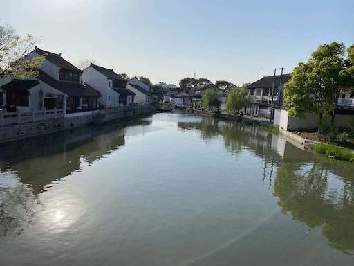
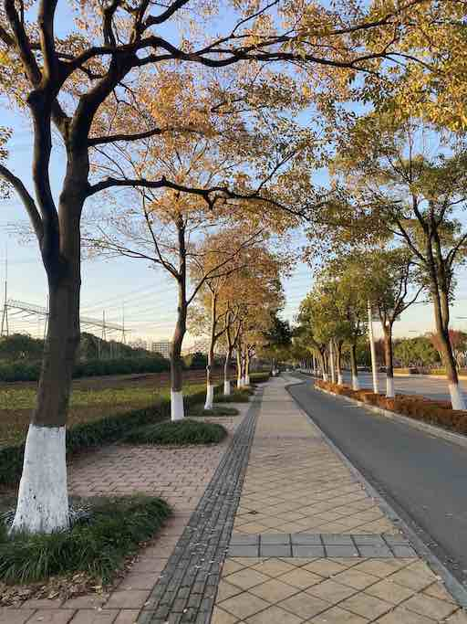
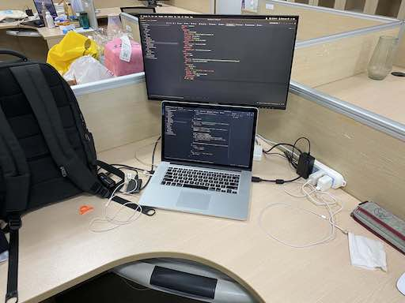
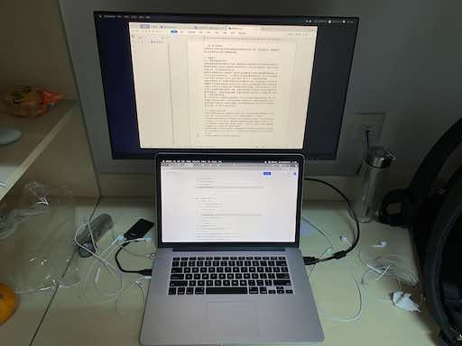
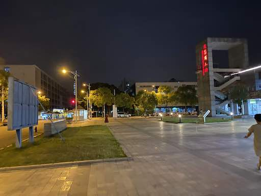
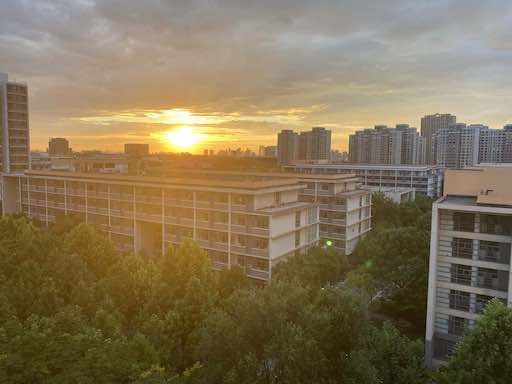
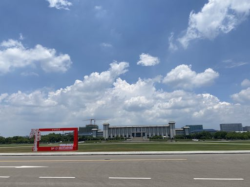
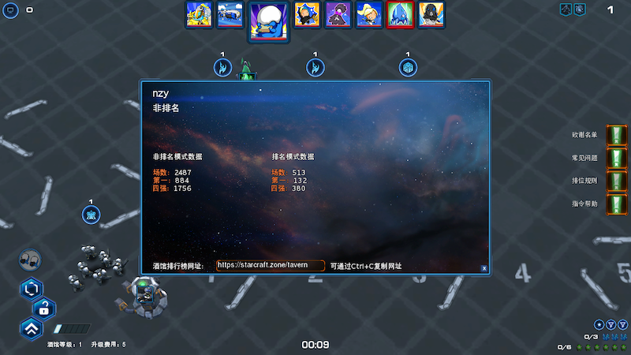

我真的不适合做科研
研一
东南大学苏州校区这边的学生是在研一开学后，大概在十月左右进行导师的双选，这跟本部的同学不太一样。不过有一点好处是，苏州这边学生的导师是从本部计算机学院/网安学院/人工智能学院的老师中选取，并且不占这些老师当年的研究生招生名额，所以如果你足够优秀的话，可以提前跟一些老师联系，如果老师对你满意的话，可以提前让你加入到导师的实验室中，这样子的话一来可以早一点开始相关领域的科研工作，二来十月份导师双选时只用走个过场就行了，因为导师双选会持续的时间很短，老师不一定有时间跟你做充分的沟通。
我所在的苏州联合研究生院是中外合办的模式，在研一开始前的那个暑假需要参加为期两个月的EDP课程，几个不同专业的学生组成一个个三十人不到的小班，由一位东南大学外语院的老师和一位蒙纳士大学的老师联合授课，本质上就是英语课，只不过其中穿插着许多有意思的小组活动和班级活动，比如海报制作、主题演讲等。
在EDP期间，许多的同学就开始联系导师了，我也在东南大学计算机学院官网上找了一些做云计算方向的导师，同步阻塞式地发自荐邮件，非常幸运第一个老师邀请我去本部面谈，于是我找了一个周末去南京九龙湖校区跟那位老师当面聊了聊，顺利通过了他的面试。东老师是南京金陵中学毕业的，在南理工读的本硕，在东南大学读的博士。凑巧的是他的一位同学在我本科母校南京林业大学计算机学院任职。
之所以想找云计算方向的导师的原因是，我在本科阶段接触了以Docker为代表的容器技术，对此技术非常喜爱，并且当时我主要使用的语言Go号称是云计算时代的C语言，所以就想把将来的科研方向定在容器技术以及云计算上。不过后来我才知道东老师目前搞的方向主要是边缘计算以及边缘智能，对容器技术不是很了解。
研一上学期主要是以基础知识的学习以及论文的阅读为主，我先系统地学习了Docker的相关知识及其原理，然后学习了Kubernetes的各个概念和日常使用。东老师整理了三十多份边缘计算及容器技术相关的论文发给我，我一周会看两篇论文，并会非常认真地做相应的阅读总结。除此之外我还会根据论文的文献引用再找一些相关的论文来学习。我每周都会以邮件的形式向东老师报告本周的学习内容，并提出一些问题跟他进行交流。当时东老师在的实验室参与到一个跟南钢合作的项目中，我被安排到了一位研二杨学长负责的组里管理Kubernetes集群，由于当时对Kubernetes还不太熟悉，有几次集群出了问题我和他排查问题排查到了很晚。
在论文的阅读过程中，我越发地感觉，部分论文中提出的解决方案及其实验结果有些不靠谱，因为我比较爱写代码，所以在读论文的过程中满脑子都在想这些机制和方法该如何用代码实现，想了半天感觉是无法复现的，东老师建议我可以给论文作者发邮件请教，然而发了几封邮件都石沉大海。这一段经历大大消磨了我对科研的热情，之前我对科研的幻想（在我这个研究方向上的）在这半年多的时间里基本破灭了。
研一上学期结束时，实验室的同学和老师去百家湖一九一二的一家饭店聚餐，期间东老师给我和一位直博生郭学姐安排了一个研究方向，在网计算。这个在网计算是借用WSN中的概念，对于一项计算任务，在网计算比边缘计算对于任务分割的粒度更低，将计算任务分配到数据传输链路上的各个节点上完成，实现数据边传边算。东老师希望郭学姐做偏理论方向的研究，而我做偏工程实现方向的研究，两者正好互补。后续正好也可以作为我硕士毕业论文的内容。
研一下学期开始时，东老师把我和郭学姐以及另外一个老师拉到了一个微信讨论组里，东老师找了二十几篇与在网计算相关的论文让我和郭学姐学习一下。这些论文大部分都是在网计算应用在WSN领域的研究成果，并且其中好几篇论文中有大量的数学公式推导，看得我一头雾水，再加上科研热情的消退，虽然我依然是每周都认真地做论文阅读笔记，周末时向东老师汇报本周的工作内容并进行一些问题交流，但是我做这些事情时的态度已经从“因为我热爱所以要做”变成了“因为这是老师安排的任务所以要做”了。
一般来说研一时会上两学期的课，但是由于苏州联合研究生院采用的是中外合办的模式，所以研一上学期时由东南大学的老师授课，而研一下学期以及研一暑假的第三学期由蒙纳士大学的老师授课，后者课程中涉及到了网络安全、Android开发、JavaEE开发以及.NET开发，由于我之前接触的不多所以都挺感兴趣的，课程中布置的Assignment以及最终的Project都非常认真地完成，其中有两个Project是以三人为一组合作完成的，我承包了我所在小组所有的代码开发工作，另外的两位组员只用负责摸鱼就行了。由于完成这部分学习内容需要花费不少的时间，所以在科研的时间上花的时间就有所减少了。
开题
由于2020年上半年疫情的原因，我一直在家里呆到十月份才返校，科研方面一直硬着头皮在做，不过感觉越做越感觉不靠谱，在十一月的时候去九龙湖校区做了一次组会报告，散会后跟几个博士讨论了相关的事情，感觉也没啥收获，回到苏州之后就躺平了，正好在网上发现了最新的汉化版星际争霸1复刻战役，花了不少时间在这个战役上。打完了复刻战役索性又把星际争霸2的四个战役通了一遍。
负责研究生培养工作的蔡老师在培养群里提醒我们第一批开题答辩将在十二月末进行，我根据我今年的研究进展赶出了一份开题报告发给东老师批阅，东老师指出我的这个在网计算平台缺乏一个具体的应用场景，而且一个硕士毕业论文需要有两个研究点和一个工程实现，但是从我的开题报告中看不出了这些要点。
我的脑子一片空白，我在写开题报告的时候就对我是否能最终实现其中提及的系统抱有怀疑的态度，并且这一年我并没有取得任何实质上的进展，看着周围的同学都提交的开题申请，我逐渐变得有些坐立不安，内心被莫名的压迫感和危机感占据。后面的日子里，我经常绕着苏州校区外围的人行道走上好几个大圈，或者爬到教学楼顶楼还处在毛坯房状态的教室里发呆，晚上睡觉的时候幻想着美国向苏州扔个核弹或者宿舍楼塌了该多好这样就一了百了了。
一味的逃避是解决不了问题的，必须要想出解决方案才行。如果这个研究方向做不下去了，那么有两种选择，一种是死磕着这个方向不放，另一种是及时止损换一个研究方向，当时的我跟倾向于后者。我当前的研究方向是当初东老师给我的，如果我想换的话，最佳的方式是自己想一个新的研究方向，然后去找老师商量，而不是直接跟老师说这个方向我做不下去您再给我一个新的方向。
几个星期后我给老师发了一封请求更换硕士开题内容的邮件，点下发送按钮时手都是在抖的，因为我不是很确定老师是否能认可我自己想的新方向。邮件全文内容如下：
老师您好
关于开题内容以及您之前指出的问题近几天我做了一些思考。
目前我的开题中最严重的问题是，我的开题内容没有跟实际的场景相结合，也就是说，我开发了这么一个新的平台，我并没有说明它能具体应用在哪些场景中。最后您和我得出的一个解决方案是将场景设定为分布式深度学习的推断。
但是关于这个解决方案我感觉有点问题。如果这样的话，那我的主要工作应该是研究分布式深度学习的推断优化，为了优化这个，才设计了这么一个在网计算模式的处理机制以及相关的任务切分机制，并搭建的相关的平台。如果这样的话，感觉我的工作重心就有些本末倒置了。
其实近半年多来，在为在网计算平台做相关的技术调研时，我一直觉得有些力不从心，包括之前做开题报告PPT的时候，自己也越来越焦虑。本来十月初确定开题内容的时候就有打算给您写邮件询问硕士论文的课题能否做一些调整，后来还是咬咬牙接续做下去了。后来的几个月虽然重新研究了wsn在网计算的相关论文，同时跟您还有郭晓琳学姐做了许多交流，但是依然觉得将其迁移到边缘计算领域对于我来说有些难度。所以现在我想找您商量一下能否调整一下硕士论文的内容。
换课题的想法其实有一部分还是出于自己的私心，害怕一年后硕士论文做不出不能毕业。我想我这么晚才找您商量这个事情可能会对您在这方面研究的计划造成影响，我也知道您是出于对我的信任才将这个课题交给我的，或许如果我早点找您商量这个问题应该会好很多。非常抱歉您对我这样缺乏科研能力的学生抱有期待并在我身上花了这么多精力。
因为之前由于平台调研的需要我对 Kubernetes 和 KubeEdge 有些研究，在使用的过程中也发现了一些问题点，我想把这些点整合一下，希望能针对一下几点做一些工作，并作为我硕士论文的内容：
实现 KubeEdge 边缘端容器跨网段通信，这样可以更好地支持容器应用的边边协同
边缘节点镜像存储管理。由于边缘端存储空间有限，可以设计判断规则删除某些无用的镜像，以节省存储空间（LRU、同一镜像多版本保留最新版本等）
容器快速启动（当一个节点上的容器意外退出时，可能会被调度到另一个节点上重新启动，此时如果从其他节点下载部分可用镜像层的话，可以加快镜像下载速度，从而达到优化容器的启动速度的目的）
优化 Kubernetes 对于边缘端容器调度机制。目前在向边缘端部署容器时，容器的调度策略使用的依旧是 k8s 默认的调度策略，这个点应该可以研究研究
具体的内容和优化方案目前我还没有想好，后续会再研读相关的论文并做一些调研，争取在下学期第二批开题之前确定具体的解决思路。硕士论文的题目起名为 “基于 Kubernetes 和 KubeEdge 的边缘端容器通信与管理的改进” 是否合适？由于是在已有的框架中做出一些改进以更好地适用于边缘计算的场景，所以这篇硕士论文的目标就非常明确：针对 Kubernetes 和 KubeEdge 在容器启动、容器调度、镜像管理、容器间通信中存在的问题做出优化解决方案，使得边缘端容器化应用的部署与运行更加高效与便利。
此致
敬礼
2021年01月12日
幸运的是，老师认可了这个新的研究方向，我参加了第二批硕士论文开题答辩并顺利通过，之后找了暑期实习，在得到老师的同意后就跑去了深圳，硕士论文的事情暂时就放到一边了。
硕士论文
实习结束回到苏州已是十月，一开始我预计用十月、十一月和十二月这三个月的时候完成编码实现，但是从暑假开始我开始沉迷星际酒馆，每天一开始玩就停不下来，最后一天的时间就废掉了，我本来以为到了苏州之后我可以戒掉这个游戏瘾，但是我发现我高估我自己了。直到寒假前，这三个多月中我真正在读论文写代码的时间加起来可能不到一个月，其余的时间都在肝酒馆，不过万幸的是在寒假开始前我已经完成了一个最初版本最粗糙的研究点代码实现。
在我寒假结束返校的当晚，苏州爆发了新冠疫情，还不及返校的同学取消返校计划，已经返校的同学被封在了宿舍里，由于东南大学苏州校区是园区第一批返校的，所以文荟公寓里只有几百号东南的学生。
从教学楼里把电脑椅和显示器搬到宿舍，我开始了论文初稿的撰写。由于文荟食堂旁的酒店被征用作为疫情隔离酒店，所以我只能步行二十多分钟去文萃食堂打包带回宿舍吃，不过由于我是跟几位同学结伴而行的，路上聊聊天也不会觉得无聊。
一篇硕士论文至少要写三万多字，我先将论文的结构设计好，然后给每章每节设定需要写的字数，将一个大目标分割成一个个小目标，逐一实现，这样子心理上能轻松一些。
我是从2月15日开始写的，大约花了两个星期不到的时间完成了初稿，然后又开始成迷星际酒馆了。最后是3月24日将初稿交给老师审阅。在将初稿交给老师后如释重负，继续成迷星际酒馆。
蔡老师在培养群里提醒我们四月底开始论文的查重和送审。我在4月18日的时候才催老师给我的初稿提些意见，老师当天晚就将带批注的初稿返给了我，看完老师给我的意见，我的大脑嗡的一下一片空白。
“都是流程描述，缺少形式化的建模和求解。不要求你建模成复杂理论问题，但至少要有个建模过程。也没有标准算法的描述。”
“研究内容不能光是简单的系统设计与实现，要从现有工作中进行凝练和抽象。要增加技术细节图而不仅仅是流程图，模块图。缺少实验对比，如何能体现你工作的有效性？”
“最后还缺一个整体的系统实现，要把各模块进行汇总形成一个系统。”
论文存在非常严重的问题。
不能逃避，要直面问题，仔细分析，给出方案。我这样鼓励我自己。
4月19日，跟老师确认初稿意见中的一些细节，确保论文修改方向正确，最后得出的结论是，需要在第三四五章说清楚自己的研究内容，需要有数学描述或者学术化的文字描述，需要能体现出创新性思想，将标题修改为“面向/基于xxx的xxx机制/策略”，而不是本科毕业设计式的标题和内容组织；需要将第三四五章中机制/策略的代码实现整合为一个完整的系统，也就是说论文需要在加一章完整系统实现；老师给我发了一份学长的论文作为参考。
4月19日至23日我过的极其煎熬，在修改第三四五章的研究内容描述时，越改越觉得自己做的东西有些不靠谱，有些地方的逻辑有些牵强，非常想逃避，天天在知乎上搜研究生延毕、肄业、退学相关的问题，并幻想要是能回到一年前就好了。跟父母打微信电话说明现在的事态，有一两次微信电话打了好几个小时。不过万幸的是最后绞尽脑汁终于搞出来了一版。4月23日将第三四五章的机制/策略描述部分交给老师，老师认可了我的内容。
到了4月27日，我把实验部分中呈现实验结果数据的表格全部改成了折线图/柱状图，感觉实验不是很充实，又补了一些实验，由于其中的几个实验没时间做，所以部分的数据是自己编的，确切地说是写了个程序自动生成的；同时将第三四五章实验部分的描述几乎全部重写，扩充的内容，比如实验的设定、实验结果的分析。将论文中的图片全部重画，之前用微软的visio画出的图太丑了，换成了draw.io。
4月29日，我花了两天的时间把论文新增的完整系统实现的章节完成了，关于各个模块的规划用了半天的时间完成，系统编程环境的搭建和调研花了半天，由于写初稿的时候就已经搭过类似的环境，所以节约了不少的时间。各个系统的模块仅实现了呈现固定数据的功能，也就是仅实现了前端，后端API接口仅能返回固定的数据，如果要把前后端完整的功能实现，估计至少要花一个星期的时间，为了能尽快完成第二版论文，只能先偷工减料赶鸭子上架了。当晚把第二版论文发给了老师，内心很忐忑，绕着文荟公寓走了一个小时。
5月3日，老师觉得我第二版改的不错，提了几个问题，我都做的解释，老师同意论文送审。
从4月19日至5月3日这段时间，我吃不好睡不好，称了体重从原来的72kg掉到了67kg，前一段时间的肌肉算白练了。天天在培养群里看到同学论文送审以及返回结果的消息，感受到了前所未有的peer pressure，到后面都不太敢打开培养群看消息了。这里要特别感谢我的室友秦同学，在我压力最大的这段时间里跟我聊天并鼓励我抓紧时间改论文争取赶第一批上会，如果没有他的话我可能真的就放弃了。
我论文的院盲结果到5月20日才返回，非常慢，送了两份院盲，有一份迟迟没返回，听说是那位老师受伤住院了。最后的盲审成绩是82和79，达到了答辩要求的最低分数（两份盲审成绩都要大于70）。听说有两三位同学的盲审成绩低于70分。
我是5月27日参加硕士论文答辩的。我参加的答辩批次是比较晚的，第一批是在5月20日就答辩了。相较于本部，苏州这边的答辩是较为严格的，答辩的时候需要隐去自己导师的名字，并且答辩通过率也不是很高，几乎每一场都有一两个同学没能通过答辩。答辩PPT和答辩稿我花了两天的时间准备就绪，由于我参加的是线上答辩，所以可以把稿子放在副屏上，答辩的时候照着读的行了。我那一场有六位同学参加答辩，最终挂了两个，我幸运地过了。我是最后一个上场答辩的，坐了整整一个下午，人都等麻了。
结束
之后的一个月就是提交一些毕业材料以及填写在各个系统上提交一些信息，最后在6月29日在苏州领双证离校，没去南京参加毕业典礼拍毕业照。对于我来说，能拿到双证已经是最好的结果了，别的我就不过多奢求了。苏州这边计算机+人工智能班总共八十多个人，最后有五十一人在六月拿到双证。
回首这三年，我觉得我的研究生是比较失败的，在科研方面毫无建树，最后的论文只是将纯工程实现做了一个简单的包装，小论文也只是发了个校庆论文，可能唯一的收获就是拿了个硕士学位吧。不过能跟本科是985/211的同学以及985学校的老师接触和共事三年也是挺值的。
ps：字节跳动的飞书文档真乃一神器，我的系统开发计划、论文撰写计划、参考文献阅读笔记等都是在其上完成的，用起来非常的顺手。
一些照片
苏州水乡

文荟公寓旁的一个变电站，经常绕着它跑步，一圈大约2千米，人和车都很少，很僻静

写代码！

疫情原因，宅在宿舍肝论文

文荟人才公寓及文荟商业广场

教学楼
夕阳下的文荟人才公寓

东南大学图书馆及广场

不到一年的时间打了三千盘星际酒馆

– 2022.07.09 南京